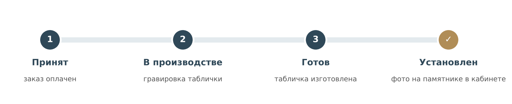

Здравствуйте, Кирилл!
Для нашего первого разговора я подготовил базовую версию технического задания. В неё вошли только те функции, с которыми портал можно запустить быстро и с небольшими затратами: страницы памяти, личный кабинет для родных, три тарифа, онлайн-оплата и заказ табличек с QR-кодом. Посмотрите, пожалуйста, всё ли здесь совпадает с вашим представлением о первом запуске, и отметьте, что хотелось бы изменить.
Техническое задание
Базовая версия1. Назначение портала
Портал хранит страницы памяти об умерших людях. Родственник создаёт страницу в личном кабинете, заказывает табличку с QR-кодом и устанавливает её на памятник. Посетитель наводит камеру телефона на код и сразу видит страницу: фотографии, биографию и сведения о человеке.
Базовая версия включает всё необходимое для первых продаж: страницу памяти, личный кабинет, три тарифа, проверку материалов оператором, онлайн-оплату, заказ табличек и административную панель.
2. Роли пользователей
| Роль | Кто это | Что может делать |
|---|---|---|
| Посетитель | Человек, который отсканировал QR-код или перешёл по ссылке | Смотреть страницу, делиться ссылкой |
| Клиент | Родственник, который создал страницу | Заполнять страницу, загружать материалы, выбирать и оплачивать тариф, заказывать табличку, создавать страницы других родственников |
| Оператор | Сотрудник портала | Проверять и исправлять материалы, писать клиенту замечания, публиковать страницы, вести заказы табличек |
| Администратор | Владелец проекта | Всё, что может оператор, а также цены, тарифы, варианты табличек, тексты сайта и писем, сотрудники |
3. Тарифы
| Что входит | Бесплатный | Базовый | VIP |
|---|---|---|---|
| ФИО, даты и места рождения и смерти, место захоронения | ✓ | ✓ | ✓ |
| Фото захоронения | 1 фото | до 10 фото | до 10 фото |
| Фотографии человека | главное фото + до 5 | до 100 | без ограничений (в пределах 10 ГБ) |
| Биография | до 1 500 знаков | до 15 000 знаков | без ограничений |
| Видео и аудио | — | до 5 видео и 10 аудиозаписей | без ограничений (в пределах 10 ГБ) |
| Проверка и редактура оператором | проверка и исправление ошибок | редактура биографии | закреплённый редактор, публикация в день обращения |
| Табличка с QR-кодом | цифровой QR-код для самостоятельной печати, табличка за доплату | табличка включена | две таблички премиум-качества и установка |
| Реклама на странице | нет | нет | нет |
| Срок хранения | на весь срок работы сервиса | на весь срок работы сервиса | на весь срок работы сервиса |
| Оплата | 0 ₽ | разово, цена согласуется | разово, цена согласуется |
Клиент может перейти на более высокий тариф в любой момент с доплатой разницы.
4. Страница памяти
Страницу чаще всего открывают с телефона прямо у памятника, поэтому она делается в первую очередь под мобильный экран и медленный интернет. Оформление единое для всех страниц, спокойное, без рекламы и всплывающих окон.
Блоки страницы (сверху вниз):
- Шапка: главное фото, ФИО, годы жизни, эпитафия и кнопка «Поделиться».
- Основные сведения: даты и места рождения и смерти, профессия, награды.
- Место захоронения: кладбище, участок, номер могилы и фото захоронения.
- Биография.
- Фотографии человека с подписями и просмотром на весь экран.
- Видео и аудио на платных тарифах: семейные записи, голос человека.
- Подвал: спокойная строка «Создать страницу памяти для своего близкого» и кнопка «Удалить меня со страницы» для людей, которые есть на фото или в тексте.
Доступ. Страница открывается по QR-коду и прямой ссылке. Поисковики её не индексируют. Владелец может на время скрыть страницу.
Поделиться. Кнопки для ВКонтакте, Telegram, Одноклассников, MAX и WhatsApp. При отправке ссылки показывается превью с фото, именем и годами жизни.
5. Личный кабинет клиента
Интерфейс рассчитан на пожилых людей: крупный шрифт, простые шаги и подсказки на каждом шаге.
Регистрация и вход: по номеру телефона с кодом в SMS или по электронной почте. При регистрации две отдельные галочки: согласие на обработку персональных данных и принятие оферты. Обе по умолчанию не отмечены, дата, время и версия текста сохраняются в базе.
Мастер создания страницы:
- Основные данные: ФИО, пол, даты и места рождения и смерти, степень родства клиента.
- Место захоронения: кладбище, участок, номер могилы, фото захоронения.
- Главное фото с кадрированием.
- Биография.
- Фотографии, а на платных тарифах ещё видео и аудио, с подписями и годом.
- Выбор тарифа и оплата.
- Предпросмотр и отправка на проверку.
Черновик сохраняется автоматически, к заполнению можно вернуться в любой день.
Загрузка материалов: форматы JPG, PNG, HEIC, WEBP, MP4, MOV, MP3, M4A; несколько файлов сразу прямо с телефона; сжатие для показа на сайте с хранением оригинала.
Статусы страницы: черновик; на проверке; нужны уточнения; опубликована; скрыта.
Ещё в кабинете:
- список своих страниц и кнопка «Добавить страницу родственника»;
- замечания оператора и ответы на них;
- заказ таблички и его статус, счета и чеки;
- удаление аккаунта и данных.
6. Проверка и публикация материалов
Каждая страница и каждое её изменение проходят проверку оператора до показа посетителям.
Порядок:
- Клиент отправляет страницу на проверку.
- Оператор проверяет материалы, исправляет ошибки и редактирует биографию в рамках тарифа.
- При замечаниях оператор пишет их в кабинете клиента и переводит страницу в статус «нужны уточнения», клиенту приходит письмо.
- Оператор публикует страницу, и QR-код начинает вести на неё.
Что не публикуется: материалы, запрещённые законом; оскорбления и нецензурная лексика; фото и видео со сценами насилия, телами умерших, откровенными сценами; телефоны, адреса и документы живых людей; реклама; чужие материалы, на которые у клиента нет прав.
Право создать страницу. При создании клиент подтверждает галочкой, что он родственник умершего или действует с согласия семьи. Оператор может запросить документ о родстве или захоронении, документы видит только оператор.
Сроки проверки: бесплатный тариф — до 3 рабочих дней, базовый — до 1 рабочего дня, VIP — в день обращения.
По каждой публикации и каждому изменению в базе сохраняется, кто и когда его сделал.
7. QR-коды и таблички
Каждая страница получает постоянный QR-код в момент создания. Код ведёт на короткую ссылку портала, а ссылка перенаправляет на страницу, поэтому табличка продолжает работать при любых изменениях на сайте.
Требования к QR-коду:
- коррекция ошибок уровня H, код читается при повреждении до 30% поверхности;
- под кодом короткая ссылка для ручного ввода;
- до публикации код ведёт на заглушку с именем и годами жизни;
- владелец скачивает код в PNG и SVG.
Таблички. Варианты табличек, размеры и цены администратор задаёт в панели.
Заказ в кабинете:
- Клиент выбирает табличку и надпись и видит макет на экране.
- Выбирает способ получения: установка мастером или самовывоз.
- Оплачивает заказ.
- Следит за статусом: принят → в производстве → готов → установлен.

Заказать табличку можно до того, как страница заполнена: родные часто заказывают её вместе с памятником и заполняют страницу позже.
8. Оплата и уведомления
Приём оплаты через ЮKassa: СБП, банковские карты МИР, Visa и Mastercard российских банков, SberPay и T-Pay. Электронный чек отправляется покупателю автоматически после каждой оплаты. Возврат денег оформляется из админ-панели, чек возврата формируется сам. Данные карт хранятся только у ЮKassa.
Уведомления приходят по электронной почте:
- смена статуса страницы и заказа таблички;
- замечание оператора;
- успешная оплата.
SMS используются только для кодов входа.
9. Сайт
Главная страница: понятное описание сервиса и того, как он работает; пример страницы памяти; тарифы с ценами; ответы на частые вопросы; кнопка заказа на первом экране и внизу страницы.
Документы: оферта, политика обработки персональных данных и тексты согласий на отдельных страницах.
Аналитика: Яндекс Метрика с баннером согласия на cookies и целями «начало оформления», «оплата» и «заказ таблички».
10. Административная панель
Доступ к панели у операторов и администраторов, права настраиваются по ролям. Разделы панели:
- Очередь проверки: новые страницы и изменения, с сортировкой по сроку и тарифу;
- Страницы памяти: поиск, просмотр, редактирование, смена статуса и тарифа;
- Заказы табличек и их статусы;
- Клиенты и оплаты: карточка клиента с заказами и платежами, возвраты;
- Тарифы, цены и варианты табличек;
- Тексты главной страницы, документов и писем;
- Сотрудники и роли.
11. Что нужно от заказчика для старта
- Цены тарифов и табличек.
- Название сервиса и доменное имя.
- Реквизиты юридического лица или ИП для оферты, чеков и ЮKassa.
- Логотип и фирменные цвета, при их отсутствии мы подготовим варианты.
- Тексты оферты, политики обработки персональных данных и согласий.
- Договорённости по изготовлению табличек: материалы, поставщик, сроки.
- Аккаунт в ЮKassa.
- Контактное лицо для оперативных согласований.
12. Контакты
По вопросам и замечаниям к техническому заданию:
- Сергей, разработчик
- Telegram: https://t.me/send_them_all